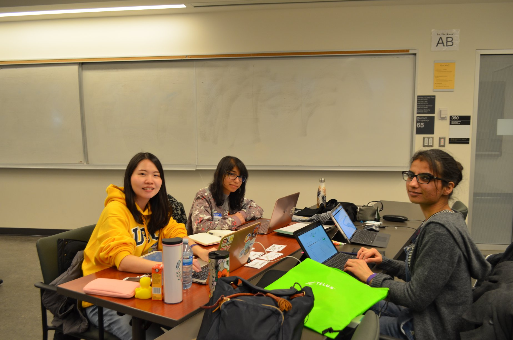
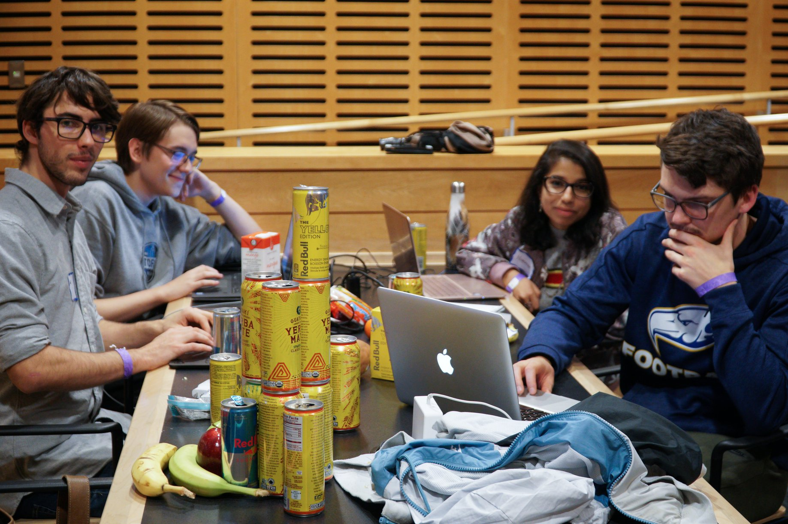

IntelliJ, PyCharm, Atom, Visual Studio Code, Git, Github
JUnit, JavaFX, Butterknife, React.js
Projects
cmd-f Hackathon // March 2018
What it was: A 24-hour hackathon hosted by nwPlus on UBC Campus. My team's project was an Android app
called ShareChore, a shared chore and task management app for roommates. The app was inspired by my personal experience -
having lived with 5 other roommates in a 6-bedroom apartment during my second year, I had an intimate understanding of
the complexities and frustrations of coordinating tasks and expenses in a household of roommates.
Why I joined: With one hackathon experience under my belt which I really enjoyed, I was itching to
do another one. I also did not have a team prior to the hackathon, so I saw it as a chance to meet new people
and take on a leadership role.
What I did:
Developed the front-end of the app using XML, Java, and Butterknife to implement the layout and buttons.
Led the testing of the app by testing new features as they were added, and reporting any issues or bugs
back to the appropriate teammate.
Identified and solved bugs from the portions of the code I contributed to by using the debugger as well as
commenting out code or writing print statements to chase down the locations of the bugs.

Fun fact: I put two of those chairs together to create a makeshift bed.

Yes, I wore the same outfit at both hackathons. Comfort is key! And no, I didn't drink all of those, my teammates did, I swear...
MLH Local Hack Day Hackathon // December 2018
What is was: A 12-hour hackathon held by nwPlus on UBC Campus. My team developed an Android app for
visually impaired individuals. The user could hold their phone up to any object and press anywhere on the
screen to take a picture. Using the Microsoft Azure object recognition API, the app would identify the object
and produce audio describing what it is.
Why I joined: Prior to this experience, I had always been intimidated about participating in hackathons.
However, I was very keen to learn new skills and develop a project with a team. I saw it as a chance to develop
myself as a programmer and to challenge myself.
What I did:
Designed and developed front-end of app using XML and Java in Android Studio
Implemented buttons in the user interface
Implemented a toggleable night mode
CPSC 210 Course Project - Recipes App // September - December 2018
What is was: A Java app for storing and viewing user-entered recipes.
Motivation: For years, I had been storing recipes by bookmarking their online links
in a folder in Chrome. This would often lead to frustration, as most online recipe posts force you to
scroll through lengthy introductory text and dozens of photos and ads before you get to the actual recipe.
I wanted a simple, visually appealing app that would display only the most essential information in a recipe.
What I did:
Used JavaFX to develop the GUI of the app
Used JUnit testing to test functions and classes
Extracurricular Activites
UBC C4 Choral Composition Club
What it is: A choir and composition club on UBC campus. We write our own original arrangements and compositions, rehearse
weekly, and present our work every December and April at a concert.
Why I joined: In high school, I was heavily involved in music, participating in Concert Choir,
Concert Band, Vocal Jazz, and Jazz Band. I joined C4 to continue to make music with others. I was drawn
to the opportunity to learn how to compose and arrange choral music, and to join a smaller club so I could
make a larger impact.
What I did:
Directed and conducted choir pieces. Led warmups and ran rehearsals.
Used Canva to create event posters and set up Facebook events for workshops and concerts.
Planned, organized, and led two workshops on scat singing/ vocal jazz improvisation, aimed at beginners.
Ran for and elected as President of club for 2019-2020 academic year.
Pearson Press Club
What it is: My high school's student-run blog.
Why I joined: Growing up, I had always loved writing. I joined Pearson Press to gain confidence in
sharing my writing with the world, as well as to contribute to my school community.
What I did:
2014-2017: As a club member, I wrote articles on a variety of topics, including
What it is: A volunteer program run by a UBC professor to bridge creativity and science in elementary school classrooms.
Why I joined: Growing up, I always found great value and enjoyment in creative science projects and competitions,
and wanted to provide the same valuable learning experience to others.
What I did:
Guided two different elementary school classrooms in developing a creative science project
Mentored individual children to provide advice and motivational support in developing their projects to completion
Collaborated with a team of volunteers to develop and carry out learning activities, and discuss the students' progress
Calgary Public Library - Program Volunteer
What is was:
Why I joined:
What I did:
placeholder
placeholder
Calgary Humane Society - Summer Day Camp Volunteer